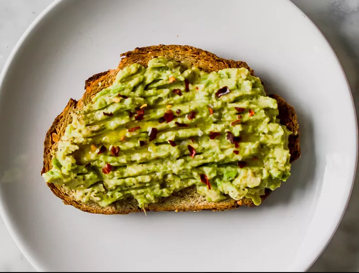

Avacado Toast

Description
A simple snack and staple of California! Enjoy this great one on the go!
Ingredients
- 1/2 small avacado
- 1/2 teaspoon fresh lemon juice
- 1/8 teaspoon Kosher salt
- 1/8 teaspoon ground black pepper
- 1 slice whole grain bread, toasted
- 1/2 teaspoon extra-virgin olive oil
- Maldon sea salt flakes for garnish
Steps
- In a small bowl, combine avocado, lemon juice, salt, and pepper. Gently mash with the back of a fork.
- Top toasted bread with mashed avocado mixture. Drizzle with olive oil and sprinkle over desired toppings.
Tips
Top toasted bread with mashed avocado mixture. Drizzle with olive oil and sprinkle over desired toppings.